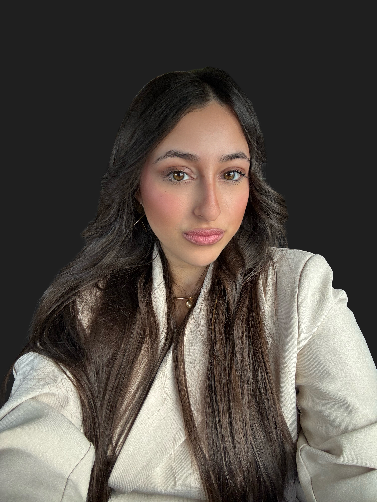

Federica
Federica

Master UX/UI Design
UX Research · UI Design · Wireframing · Prototyping · Accessibilità · User Testing · HTML & CSS

Sono una Graphic e UX/UI Designer appassionata di identità visiva e design digitale. Mi piace trasformare idee e concept in esperienze visive semplici, riconoscibili e funzionali, dal branding alla progettazione di interfacce. Sono curiosa, attenta ai dettagli e sempre alla ricerca di nuovi modi per migliorare e ampliare le mie competenze.
UX Research · UI Design · Wireframing · Prototyping · Accessibilità · User Testing · HTML & CSS
Graphic Design · Brand Identity · Grafica Editoriale · Fotografia e Post-produzione
Graphic Design · UX/UI Design · Web Design · WordPress · Adobe Creative Suite
2025–2026
Gestione delle comunicazioni con donatori e sostenitori, assistenza inbound e outbound, aggiornamento dati e utilizzo di strumenti CRM. Sviluppo di capacità comunicative, organizzative e di gestione autonoma delle richieste.
Roma · 2022 — 2023
Supporto e assistenza ai cittadini nell’utilizzo dei servizi digitali. Realizzazione di materiali grafici e informativi per attività di comunicazione e sensibilizzazione.